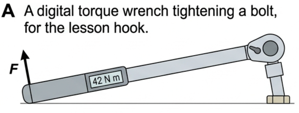
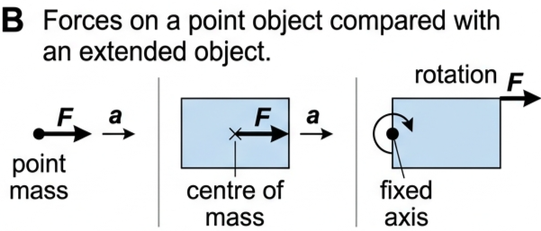
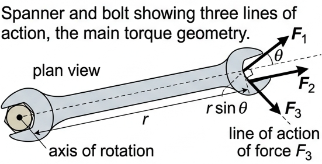
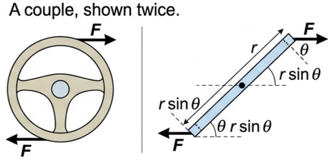
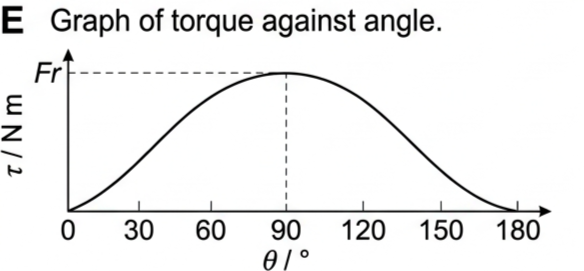
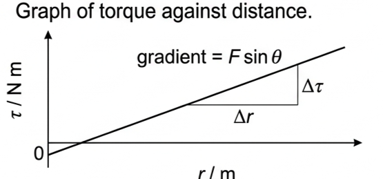
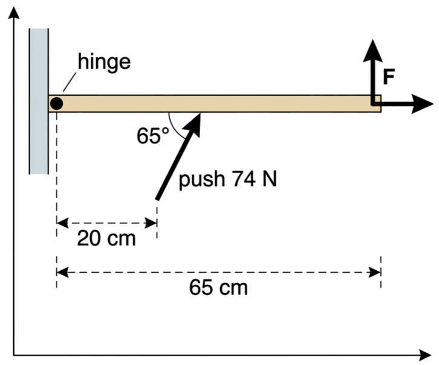
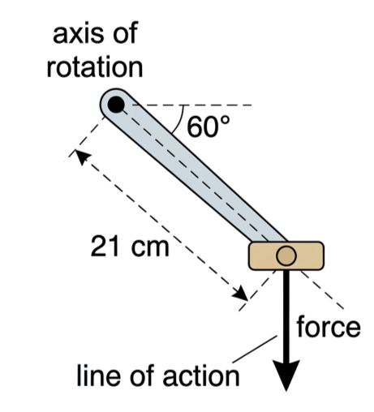

🔧 Hook – why a torque wrench has a scale on it
A mechanic tightening a cylinder-head bolt does not simply pull as hard as possible. Over-tightening damages the bolt and, with it, the engine. A torque wrench limits the turning effect that can be applied, and modern designs (Figure A4.3 in your text is a digital one) read that turning effect out on a display. What the scale reads is not the force in the mechanic's hand — it is the force multiplied by how far out along the handle it acts and by how squarely it is applied. The turning effect of a force depends on where and in which direction it acts, not only on how big it is.

🌀 Point objects, extended objects, and the words for turning
Dynamics is the branch of physics concerned with motion and its causes — forces. Topics A.1, A.2 and A.3 dealt mostly with linear dynamics: bodies moving in straight lines, and treated as point objects to keep the situations simple. This topic is different. Here the focus is on extended objects — objects that have dimensions, not points — which are able to rotate.
A resultant force on a point mass produces a linear translational acceleration, \(F = ma\). That stays true for an extended object, but only if the force is directed at the centre of mass. When resultant forces are directed elsewhere on an object, the situation is complicated and the result depends on how the magnitude and direction of the force vary after initial contact.

All of Topic A.4 is about rotations caused by forces on objects which are able to rotate in the same place because they have a fixed axis of rotation — wheels, for example.
Rotate usually refers to movement about an axis within the body: the Earth rotates every 24 hours. Rotation does not affect the body's location. Revolve usually concerns movement of a body around an exterior point: the Earth revolves around the Sun every year. Some situations may legitimately be described either way. We also assume bodies are rigid — their shape does not deform significantly under the action of forces. The simplest everyday examples of rotation are a wheel and a door handle.
Rotational dynamics becomes much easier if you lean on what you already know. Every concept of linear dynamics has a rotational equivalent, with similar equations.
| Linear motion | Rotational motion |
|---|---|
| force | torque |
| mass (a measure of inertia) | moment of inertia |
| linear displacement | angular displacement |
| linear speed / velocity | angular speed / velocity |
| linear acceleration | angular acceleration |
| linear momentum | angular momentum |
| linear kinetic energy | rotational kinetic energy |
📐 Torque – the turning effect of a force
In situations where rotation may be possible, it is important to identify the place about which the rotation can occur. Most commonly this will involve an axis of rotation. The terms pivot, hinge and fulcrum are widely used for situations in which movement is not complete, nor continuous.
A straight line showing the direction in which a force is applied is called its line of action. Any force applied to an object whose line of action is not through the axis of rotation will tend to start, or change, rotational motion, if that is possible.
Bigger forces tend to produce larger rotational accelerations, but the line of action — the direction — matters just as much. In Fig 3, \(F_1\) has no turning effect at all, because its line of action passes through the axis of rotation. \(F_2\) has the biggest turning effect, because its line of action is perpendicular to a line joining its point of application to the axis. \(F_3\) has an effect between these two extremes. The turning effect also depends on the distance, \(r\), from the axis of rotation to the line of action of the force.

The turning effect of a force \(F\) is known as its torque, \(\tau\), and it depends on the magnitude of the force and the perpendicular distance from the axis of rotation to the line of action of the force. In Fig 3 that perpendicular distance is shown for \(F_3\) as \(r\sin\theta\), where \(\theta\) is the angle between the line of action of the force and a line joining the point of application of the force to the axis of rotation, and \(r\) is the distance from the axis of rotation to the point of application of the force.
When there is no actual rotation, torque is sometimes called the moment of a force. You may already be familiar with the principle of moments for a body in equilibrium: if an object is in rotational equilibrium, the sum of the clockwise moments equals the sum of the anticlockwise moments.
⚖️ Combining torques, couples and rotational equilibrium
Torque is a vector quantity, but generally we will only be concerned with its sense: whether it tends to produce clockwise or anticlockwise motion. When more than one torque acts on a body, the resultant (net) torque can be found by simple addition — but clockwise and anticlockwise torques oppose each other. An object acted on by a 12 N m clockwise torque and a 15 N m anticlockwise torque has a resultant torque of 3 N m anticlockwise.
A couple is a pair of equal-sized forces that have different lines of action but which are parallel to each other and act in opposite directions, either side of the axis of rotation. A couple produces no resultant force on an object, so there is no translational acceleration: the object remains in the same location. Turning a steering wheel is the classic example. Other examples include the forces on a bar magnet placed in a uniform magnetic field, the forces on the handlebar of a bicycle, and the forces on a spinning motor.
The magnitude of the torque provided by a couple is simply twice the magnitude of the torque provided by each of the two individual forces.

If an object remains at rest, or continues to move in exactly the same way, it is in equilibrium. Translational equilibrium occurs when there is no resultant force acting on an object (Newton's first law, Topic A.2), so it remains stationary or continues to move with constant velocity. A similar definition applies to rotation.
If there is a resultant torque acting on a body, it will produce an angular acceleration — the rotational parallel of \(F = ma\), which you meet in full in Lesson 3 of this topic.
📈 Graph mastery
| Graph type | Axes (X, Y) | Shape | What to read |
|---|---|---|---|
| Torque against angle | θ (0–180°), τ (N m) | Sine curve, zero at 0° and 180°, peak at 90° | Maximum torque \(Fr\) at θ = 90°; zero whenever the line of action passes through the axis |
| Torque against distance | \(r\) (m), τ (N m) | Straight line through the origin | Gradient = \(F\sin\theta\); doubling the spanner length doubles the torque |
| Torque against force | \(F\) (N), τ (N m) | Straight line through the origin | Gradient = \(r\sin\theta\), the perpendicular distance |
| Resultant torque against time | \(t\) (s), τ (N m) | Horizontal line at τ = 0 for equilibrium | Any departure from zero means angular acceleration has begun |


✍️ Worked example 1 – the spanner (A4.1)
Look again at Fig 3. a If \(r\) = 48 cm, calculate the torque produced by a force of 35 N applied along the line of action of \(F_2\). b Determine the value of \(F_3\) that would produce the same torque as in part a, if the angle θ = 55°.
\(= 35 \times 0.48 \times \sin 90^\circ\)
and for b: \(17 = F_3 \times 0.48 \times \sin 55^\circ\)
b \(F_3 = 17 / 0.393 = 43\ \text{N}\) — a larger force for the same turning effect, because only the perpendicular component counts.
✍️ Worked example 2 – holding a door shut (A4.2)
Fig 7 shows a view of a door from above. A person is trying to push the door open with a force of 74 N in the direction and position shown, 20 cm from the hinge at 65°. Calculate the minimum force, \(F\) (magnitude and direction) needed at the handle, 65 cm from the hinge, to stop this happening.
\(Fr\sin\theta\ \text{clockwise} = Fr\sin\theta\ \text{anticlockwise}\)
\(F \times 0.65 \times \sin 90^\circ = 74 \times 0.20 \times \sin 65^\circ\)
\(F = 21\ \text{N}\) clockwise, perpendicular to the door.

🚲 Real world – where torque is engineered
Door handles sit as far from the hinge as the design allows, because \(\tau = Fr\sin\theta\) rewards distance. Cyclists get the most from each stroke when the pedal arm is horizontal and the push is vertical, and waste effort at the top and bottom of the circle. A torque wrench protects an engine block by capping \(\tau\), not \(F\). And the forces on a bar magnet in a uniform magnetic field, on a bicycle handlebar, and on a spinning motor are all couples — equal, parallel, opposite forces that turn without dragging the object sideways.
🎓 HL extension – towards rotational Newton's second law
An unbalanced torque applied to an extended, rigid body will cause rotational acceleration. Compare with linear motion: \(F = ma\) says acceleration is resultant force over inertia. In rotation, the resultant torque is divided by the moment of inertia, the rotational measure of inertia that depends on how the mass is distributed about the axis. That relationship, \(\tau = I\alpha\), is Lesson 3 of this topic.
Linking question: how does a torque lead to simple harmonic motion? This links to understandings in Topic C.1.
⚠️ Trap corner – common mistakes
| Misconception | Correct view |
|---|---|
| "Torque is measured in joules, since both are N m." | Torque is N m but is not equivalent to energy. It is never quoted in J, and never in N m−1. |
| "Any force on a body that can rotate will turn it." | A force whose line of action passes through the axis has zero torque, whatever its magnitude — like \(F_1\) in Fig 3. |
| "\(r\) in \(\tau = Fr\sin\theta\) is the perpendicular distance." | \(r\) is the distance from the axis to the point of application. The perpendicular distance is \(r\sin\theta\). |
| "θ is the angle to the horizontal." | θ is the angle between the line of action and the line joining the point of application to the axis. |
| "A couple must produce translational acceleration, since two forces act." | The two forces are equal and opposite, so there is no resultant force: the object rotates but does not change location. |
| "Rotational equilibrium means the body is not rotating." | It means no resultant torque, so the body is either stationary or rotating at constant angular speed. |
The turning effect of a force about an axis is called its . It is calculated from the force and the distance from the axis of rotation to the line of action, so the torque is greatest when θ = °.
Where rotation is incomplete, the same quantity is often called the of a force. A pair of equal, parallel, oppositely directed forces either side of the axis is a , and its torque is that of one of its forces.
A body in rotational equilibrium has a resultant torque of , while an unbalanced torque on an extended rigid body causes rotational .
✓ \(F = \tau / r\sin\theta = 55 / 0.25\)
✓ \(F = 220\ \text{N}\).

✓ \(\tau = 8.7\ \text{N m}\).
✓ (b) Pedal arm drawn horizontal, so the vertical downward push is perpendicular to the arm (θ = 90°), giving \(\tau = 48 \times 0.21 = 10\ \text{N m}\).
✓ (c) At the top and at the bottom of each rotation.
✓ There the downward line of action passes through (or close to) the axis, so \(r\sin\theta \rightarrow 0\) and any force produces no useful torque.
✓ \(\tau = 4.3\ \text{N m}\).
✓ (b) Axes labelled: angle turned on the x-axis, torque on the y-axis.
✓ A smooth sinusoidal curve, maximum \(2Fr\) where the bar is perpendicular to the forces, falling to zero when the bar lies along the lines of action.
✓ (c) No.
✓ The torques of the two forces always act in the same sense and add.
✓ Moving the axis increases one perpendicular distance by exactly as much as it decreases the other, so the total \(2Fr\sin\theta\) is unchanged.
✓ Their lines of action are different and lie either side of the axis, so neither passes through the axis of rotation.
✓ Both torques act in the same sense and add to give a resultant torque \(2Fr\sin\theta\), which produces rotational acceleration.
✓ \(\tau = 13.5\ \text{N m}\).
✓ (b) \(\tau = 60 \times 0.35 = 21\ \text{N m}\).
✓ At 90° the whole of \(r\) is the perpendicular distance from the axis to the line of action, so sin θ = 1 and the torque is the maximum possible for that force and distance.
✓ Revolution is movement of a body around an exterior point — e.g. the Earth revolving around the Sun once a year.
✓ (b) A rigid body is one whose shape does not change (does not deform significantly) under the action of forces.
✓ It allows distances from the axis, and therefore \(r\) and \(r\sin\theta\), to be treated as constant while the forces act.